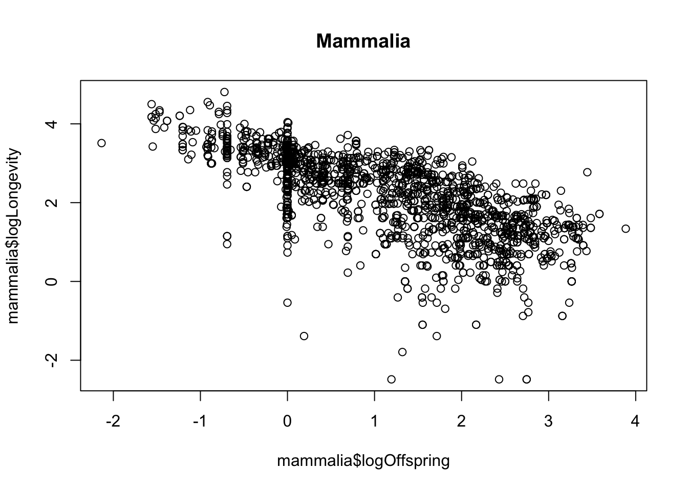
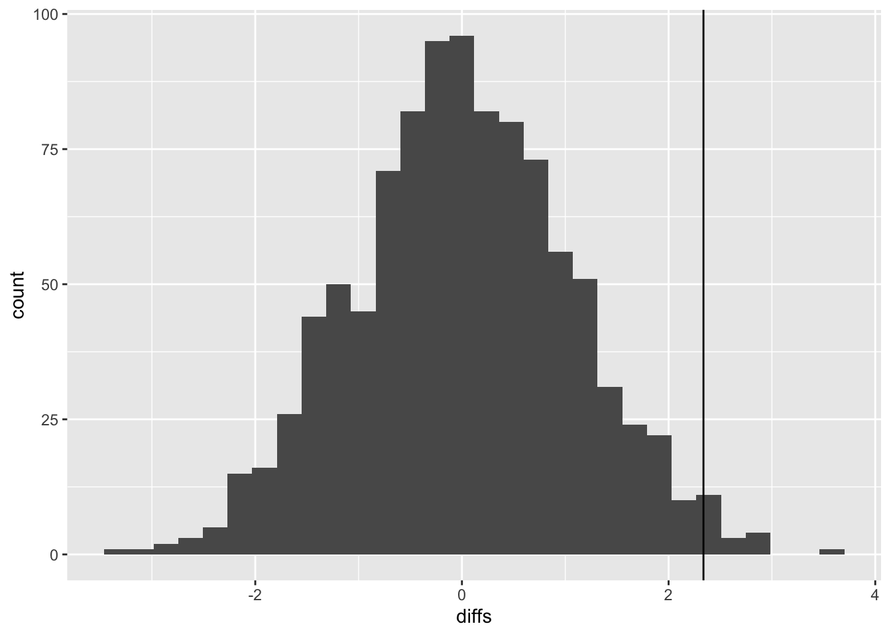
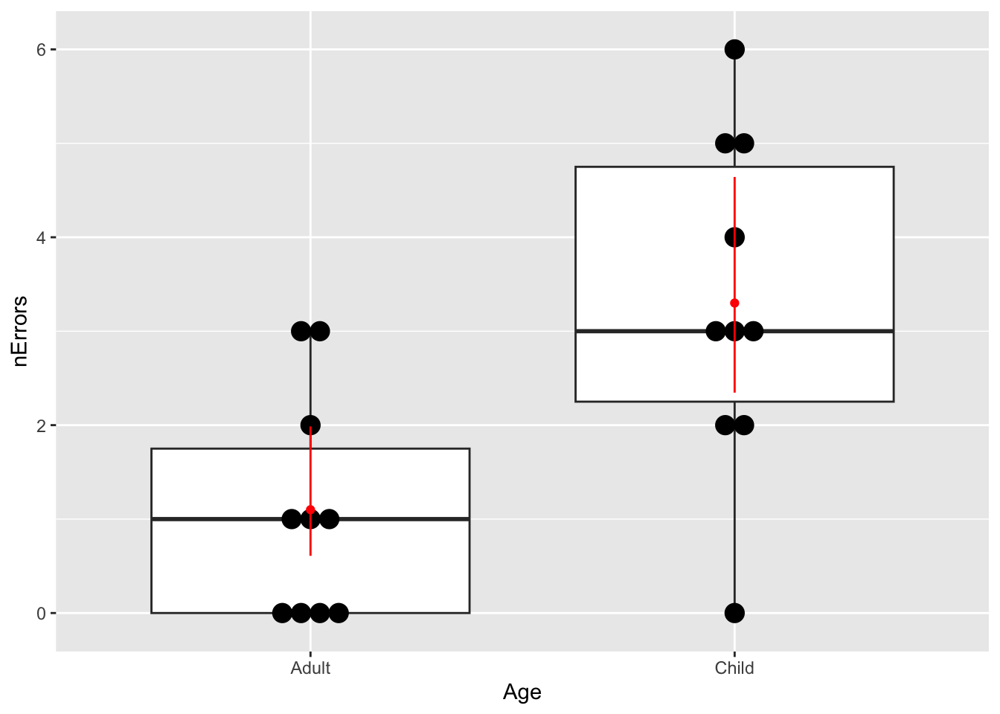

Chapter 24 Exercise Solutions
These are the solutions to the exercises used in the course.
24.1 Californian bird diversity
- First import the data. Check that the columns look as they should. (e.g. use
summaryorstrfunctions). Tip: use the “Wizard” in RStudio to guide you.
birds <- read.csv("CourseData/suburbanBirds.csv")- What is the mean, minimum, and maximum number of species seen? (there is more than one way to do this)*
mean(birds$nSpecies)## [1] 9.647059min(birds$nSpecies)## [1] 3max(birds$nSpecies)## [1] 15range(birds$nSpecies)## [1] 3 15summary(birds$nSpecies)## Min. 1st Qu. Median Mean 3rd Qu. Max.
## 3.000 6.000 11.000 9.647 13.000 15.000- How old are the youngest and oldest suburbs? (hint: the survey was carried out in 1975, do the math!)
1975 - min(birds$Year)## [1] 291975 - max(birds$Year)## [1] 1- Plot the relationship between
YearandnSpeciesas a scatterplot using base-R graphics (using theplotfunction).
plot(birds$Year, birds$nSpecies)
- The pattern might be easier to see if you could replace
YearBuiltwith suburb age. Create a new vector in your data frame for this variable (e.g.birds$Age <- 1975 - birds$Year)). Re-plot your results.
birds$Age <- 1975 - birds$Year
plot(birds$Age, birds$nSpecies)
- What do the data show? What might be the mechanisms for the patterns you see? Do they match your expectations?
If you recall that the average species richness pre-development was about 3.5 species, the data show that suburban development is actually good for bird species. This could be surprising, but a possible explanation is that the gardens, parks, trees etc. that come with development represent additional habitats that would not normally be there. Therefore, these areas attract new species.
- Export your plots and paste them into a Word Document.
You can do this with several methods. My favourite quick method is to click the Export button > Copy to Clipboard, resize the plot so it looks nice, then click Copy Plot. Finally, paste into Word with Ctrl (or Cmd) + V.
24.2 Wrangling the Amniote Life History Database
- When you have imported the data, use
dimto check the dimensions of the whole data frame (you should see that there are 36 columns and 21322 rows). Usenamesto look at the names of all columns in the data inamniote.
amniote <- read.csv("CourseData/Amniote_Database_Aug_2015.csv",
na.strings = "-999"
)dim(amniote)## [1] 21322 36names(amniote)## [1] "class" "order" "family" "genus"
## [5] "species" "subspecies" "common_name" "female_maturity_d"
## [9] "litter_or_clutch_size_n" "litters_or_clutches_per_y" "adult_body_mass_g" "maximum_longevity_y"
## [13] "gestation_d" "weaning_d" "birth_or_hatching_weight_g" "weaning_weight_g"
## [17] "egg_mass_g" "incubation_d" "fledging_age_d" "longevity_y"
## [21] "male_maturity_d" "inter_litter_or_interbirth_interval_y" "female_body_mass_g" "male_body_mass_g"
## [25] "no_sex_body_mass_g" "egg_width_mm" "egg_length_mm" "fledging_mass_g"
## [29] "adult_svl_cm" "male_svl_cm" "female_svl_cm" "birth_or_hatching_svl_cm"
## [33] "female_svl_at_maturity_cm" "female_body_mass_at_maturity_g" "no_sex_svl_cm" "no_sex_maturity_d"- We are interested in longevity (lifespan) and body size and reproductive effort and how this might vary depending on the taxonomy (specifically, with Class). Use
selectto pick relevent columns of the dataset and discard the others. Call the new data framex. The relevant columns are the taxonomic variables (class,species) andlongevity_y,litter_or_clutch_size_n,litters_or_clutches_per_y, andadult_body_mass_g.
x <- amniote %>%
select(
class, genus, species,
longevity_y, adult_body_mass_g,
litter_or_clutch_size_n, litters_or_clutches_per_y
)- Take a look at the first few entries in the
speciescolumn. You will see that it is only the epithet, the second part of the Genus_species name, that is given.
Usemutateandpasteto convert thespeciescolumn to a Genus_species by pasting the data ingenusandspeciestogether. To see how this works, try out the following command,paste(1:3, 4:6). After you have created the new column, remove thegenuscolumn (usingselectand-genus).
x <- x %>%
mutate(species = paste(genus, species)) %>%
select(-genus)
head(x)## class species longevity_y adult_body_mass_g litter_or_clutch_size_n litters_or_clutches_per_y
## 1 Aves Accipiter albogularis NA 251.500 NA NA
## 2 Aves Accipiter badius NA 140.000 3.25 1
## 3 Aves Accipiter bicolor NA 345.000 2.70 NA
## 4 Aves Accipiter brachyurus NA 142.000 NA NA
## 5 Aves Accipiter brevipes NA 203.500 4.00 1
## 6 Aves Accipiter castanilius NA 159.375 NA NA- What is the longest living species in the record? Use
arrangeto sort the data from longest to shortest longevity (longevity_y), and then look at the top of the file usingheadto find out. (hint: you will need to use reverse sort (-)). Cut and paste the species name into Google to find out more!
x <- x %>% arrange(-longevity_y)
head(x)## class species longevity_y adult_body_mass_g litter_or_clutch_size_n litters_or_clutches_per_y
## 1 Reptilia Chelonoidis duncanensis 177.0 NA NA NA
## 2 Reptilia Aldabrachelys gigantea 152.0 117200 13.5 2.000000
## 3 Reptilia Testudo graeca 127.0 1430 5.0 3.200993
## 4 Mammalia Homo sapiens 122.5 62035 1.0 0.485000
## 5 Mammalia Balaenoptera physalus 95.0 38800000 1.0 0.400000
## 6 Mammalia Orcinus orca 90.0 4300000 1.0 0.210000- Do the same thing but this time find the shortest lived species.
x <- x %>% arrange(longevity_y)
head(x)## class species longevity_y adult_body_mass_g litter_or_clutch_size_n litters_or_clutches_per_y
## 1 Mammalia Lepus nigricollis 0.08333333 2196.875 1.59 7.150
## 2 Mammalia Notoryctes caurinus 0.08333333 34.000 1.50 NA
## 3 Mammalia Allactaga balikunica 0.08333333 NA 2.52 NA
## 4 Mammalia Allactaga bullata 0.08333333 NA 2.52 NA
## 5 Mammalia Geomys pinetis 0.08333333 195.750 1.77 1.865
## 6 Mammalia Mus sorella 0.08333333 12.535 5.20 3.000- Use
summariseandgroup_byto make a table summarisingmin,medianandmaxlife spans (longevity_y) for the three taxonomic classes in the database. Remember that you need to tell R to remove theNAvalues using ana.rm = TRUEargument.
x %>%
group_by(class) %>%
summarise(
min = min(longevity_y, na.rm = TRUE),
median = median(longevity_y, na.rm = TRUE),
max = max(longevity_y, na.rm = TRUE)
)## # A tibble: 3 × 4
## class min median max
## <chr> <dbl> <dbl> <dbl>
## 1 Aves 0.75 12.5 75
## 2 Mammalia 0.0833 8.67 122.
## 3 Reptilia 0.2 11.0 177- Body size is thought to be associated with life span. Let’s treat that as a hypothesis and test it graphically. Sketch what would the graph would look like if the hypothesis were true, and if it was false. Plot
adult_body_mass_gvs.longevity_y(using base R graphics). You should notice that this looks a bit messy.
plot(x$adult_body_mass_g, x$longevity_y)
- Use
mutateto create a newlog-transformed variables,logMassandlogLongevity. Use these to make a “log-log” plot. You should see that makes the relationship more linear, and easier to “read”.
x <- x %>%
mutate(
logMass = log(adult_body_mass_g),
logLongevity = log(longevity_y)
)
plot(x$logMass, x$logLongevity)
- Is there a trade-off between reproductive effort and life span? Think about this as a hypothesis - sketch what would the graph would look like if that were true, and if it was false. Now use the data to test that hypothesis: Use
mutateto create a variable calledlogOffspringwhich is the logarithm of number of litters/clutches per year multiplied by the number of babies in each litter/clutch . Then plotlogOffspringvs.logLongevity.
x <- x %>%
mutate(logOffspring = log(
litter_or_clutch_size_n * litters_or_clutches_per_y
))
plot(x$logOffspring, x$logLongevity)- To answer the final question (differences between taxonomic classes) you could now use
filterto subset to particular classes and repeat the plot to see whether the relationships holds universally.
aves <- x %>%
filter(class == "Aves")
plot(aves$logOffspring, aves$logLongevity)
title("Aves")
mammalia <- x %>%
filter(class == "Mammalia")
plot(mammalia$logOffspring, mammalia$logLongevity)
title("Mammalia")
reptilia <- x %>%
filter(class == "Reptilia")
plot(reptilia$logOffspring, reptilia$logLongevity)
title("Reptilia")
24.3 Temperature effects on egg laying dates
- Import the data and take a look at it with
headorstr.
eggDates <- read.csv("CourseData/eggDates.csv")
head(eggDates)## boxNumber y2013 y2014 y2016 y2017 y2018 y2019
## 1 1 116 103 NA 107 111 NA
## 2 2 NA NA NA 114 118 NA
## 3 3 NA 102 108 NA NA NA
## 4 4 121 103 121 155 111 110
## 5 5 135 100 108 102 106 108
## 6 6 122 113 122 NA 124 149- Use
pivot_longerto reformat the data. This might take a bit of trial and error - don’t give up!
Maybe this will help: The first argument in the pivot_longer command (cols) tells R which columns contain the data you are interested in (in this case, these are y2013,y2014 etc). Then the names_to argument tells R what you want to name the new column from this data (in this case, Year). Then, the values_to argument tells R what the data column should be called (e.g. Day). In addition, there is a useful argument called names_prefix that will remove the part of the column name (e.g. the y of y2013)
You should also make sure that the Year column is recognised as being a numeric variable rather than a character string. You can do this by adding a command using mutate and as.numeric, like this mutate(Year = as.numeric(Year))
You should end up with a dataset with three columns as described above.
eggDates <- eggDates %>% pivot_longer(
cols = starts_with("y"),
names_to = "Year", values_to = "day"
)
head(eggDates)## # A tibble: 6 × 3
## boxNumber Year day
## <int> <chr> <int>
## 1 1 y2013 116
## 2 1 y2014 103
## 3 1 y2016 NA
## 4 1 y2017 107
## 5 1 y2018 111
## 6 1 y2019 NA- Ensure that year is coded as numeric variable using
mutate. [Hint, you can use the commandas.numeric, but first remove the “y” in the name usinggsub].
eggDates <- eggDates %>%
mutate(Year = gsub(pattern = "y", replacement = "", Year)) %>%
mutate(Year = as.numeric(Year))
head(eggDates)## # A tibble: 6 × 3
## boxNumber Year day
## <int> <dbl> <int>
## 1 1 2013 116
## 2 1 2014 103
## 3 1 2016 NA
## 4 1 2017 107
## 5 1 2018 111
## 6 1 2019 NA- Calculate the mean egg date per year using
summarise(remember togroup_bythe year first). Take a look at the data.
meanEgg <- eggDates %>%
group_by(Year) %>%
summarise(meanEggDate = mean(day, na.rm = TRUE))
meanEgg## # A tibble: 6 × 2
## Year meanEggDate
## <dbl> <dbl>
## 1 2013 125.
## 2 2014 108.
## 3 2016 115.
## 4 2017 112.
## 5 2018 117.
## 6 2019 111.Preparing the weather data
- Import the weather data and take a look at it with
headorstr.
weather <- read.csv("CourseData/AarslevTemperature.csv")
str(weather)## 'data.frame': 3633 obs. of 4 variables:
## $ YEAR : int 2012 2012 2012 2012 2012 2012 2012 2012 2012 2012 ...
## $ MONTH: int 4 4 4 4 4 4 4 4 4 4 ...
## $ DAY : int 11 12 13 14 15 16 17 18 19 20 ...
## $ TEMP : num 8.1 6.6 5.9 6.2 6.5 4.3 4.3 7 8.9 6.5 ...- Use
filtersubset to the months of interest (February-April) and thensummarisethe data to calculate the mean temperature in this period (remember togroup_byyear). Look at the data. You should end up with a dataset with two columns -YEARandmeanSpringTemp.
weather <- weather %>%
filter(MONTH %in% 2:4) %>%
group_by(YEAR) %>%
summarise(meanAprilTemp = mean(TEMP))
head(weather)## # A tibble: 6 × 2
## YEAR meanAprilTemp
## <int> <dbl>
## 1 2012 7.86
## 2 2013 1.60
## 3 2014 6.03
## 4 2015 4.63
## 5 2016 4.50
## 6 2017 4.77Bringing it together
- Join the two datasets together using
left_join. You should now have a dataset with columnsnestNumber,Year,dayNumberandmeanAprilTemp
joinedData <- left_join(meanEgg, weather, c("Year" = "YEAR"))
head(joinedData)## # A tibble: 6 × 3
## Year meanEggDate meanAprilTemp
## <dbl> <dbl> <dbl>
## 1 2013 125. 1.60
## 2 2014 108. 6.03
## 3 2016 115. 4.50
## 4 2017 112. 4.77
## 5 2018 117. 3.07
## 6 2019 111. 6.12Plot the data
- plot a graph of
meanAprilTempon the x-axis anddayNumberon the y-axis.
plot(joinedData$meanAprilTemp, joinedData$meanEggDate)
Now you should be able to answer the question we started with: is laying date associated with spring temperatures? Yes, there looks to be a negative relationship between temperature and egg laying date.
24.4 Virtual dice
Let’s try the same kind of thing with the roll of (virtual) dice.
Here’s how to do one roll of the dice:
diceRoll <- 1:6
sample(diceRoll, 1)[1] 3
- Simulate 10 rolls of the dice, and make a table of results.
result <- sample(diceRoll, 10, replace = TRUE)
table(result)## result
## 2 3 4 5 6
## 2 3 1 1 3Your table will probably look different to this, because it is a random process. You may notice that some numbers in the table are missing if some numbers were never rolled by our virtual dice.
- Now simulate 90 rolls of the dice, and plot the results as a bar plot using
geom_baringgplot. Add a horizontal line usinggeom_ablineto show the expected result based on what you know about probability.
n <- 90
result <- data.frame(result = sample(diceRoll, n, replace = TRUE))
ggplot(result, aes(x = result)) +
geom_bar() +
geom_abline(intercept = n / 6, slope = 0)
Figure 24.1: Barplot of 90 simulated dice throws
- Try adjusting the code to simulate dice rolls with small (say, 30) and large (say, 600, or 6000, or 9000) samples. Observe what happens to the proportions, and compare them to the expected value. What does this tell you about the importance of sample size when trying to estimate real phenomena?
You only need to edit the n <- 90 line in the code above
The main message here is that as sample size increases you are more likely to obtain a good estimate of the true value of the phenomenon. You may also notice that, what would be considered a good sample size for the coin flipping (i.e. it recovers the true probability of 0.5 reasonably well) is NOT adequate for getting a good estimate of the probabilities for the dice.
This is because of the different number of possibilities: as the range of possible outcomes increases, the sample size requirements increase. In other words, choosing a good sample size is context-dependent.

Figure 24.2: Barplots of 30 and 9000 simulated dice throws
24.5 Sexual selection in Hercules beetles
- What is your null hypothesis?
Null Hypothesis - There is no difference in the widths of the species.
- What is your alternative hypothesis?
Alternative Hypothesis - Males have larger widths than females.
- Import the data.
hercules <- read.csv("CourseData/herculesBeetle.csv")- Calculate the mean for each sex (either using
tapplyor usingdplyrtools)
# With dplyr
hercules %>%
group_by(sex) %>%
summarise(mean = mean(width))## # A tibble: 2 × 2
## sex mean
## <chr> <dbl>
## 1 Female 15.0
## 2 Male 17.4# with tapply
tapply(hercules$width, hercules$sex, mean)## Female Male
## 15.02825 17.36568- Plot the data as a histogram.
# Let's look at the male and female data
(plot1 <- ggplot(hercules, aes(x = width, fill = sex)) +
geom_histogram(position = "identity", alpha = .7))
- Add vertical lines to the plot to indicate the mean values.
hercules %>%
group_by(sex) %>%
summarise(mean = mean(width)) %>%
pull(mean) -> meanVals
plot1 + geom_vline(xintercept = meanVals, colour = c("red", "blue"))
- Now calculate the difference between the mean values using
dplyrtools, ortapply.
# with dplyr
hercules %>%
group_by(sex) %>%
summarise(mean = mean(width)) %>%
pull(mean) %>%
diff() -> observedDiff
observedDiff## [1] 2.337433# with tapply
diff(as.vector(tapply(hercules$width, hercules$sex, mean)))## [1] 2.337433- Use
sampleto randomise the sex column of the data, and recalculate the difference between the mean.
# with dplyr
hercules %>%
mutate(sex = sample(sex)) %>%
group_by(sex) %>%
summarise(mean = mean(width)) %>%
pull(mean) %>%
diff()## [1] -1.900753# with tapply
diff(as.vector(tapply(hercules$width, sample(hercules$sex), mean)))## [1] 0.3205587- Use
replicateto repeat this 10 times (to ensure that you code works).
# with dplyr
replicate(
10,
hercules %>%
mutate(sex = sample(sex)) %>%
group_by(sex) %>%
summarise(mean = mean(width)) %>%
pull(mean) %>%
diff()
)## [1] 0.3885126 -0.5711667 -0.2898130 -0.3766535 -0.4209082 -0.4678595 -2.1980346 -1.5961324 0.8836404 1.2863489# with tapply
replicate(
10,
diff(as.vector(tapply(
hercules$width,
sample(hercules$sex), mean
)))
)## [1] 1.2267611 -0.2954281 0.3783011 -0.6666253 -1.4024738 0.6233728 -0.5334274 0.2076405 -0.4760695 -0.6967478- When your code is working, use
replicateagain, but this time with 1000 replicates and pass the results into a data frame.
# with dplyr
diffs <- data.frame(
diffs =
replicate(
1000,
hercules %>%
mutate(sex = sample(sex)) %>%
group_by(sex) %>%
summarise(mean = mean(width)) %>%
pull(mean) %>%
diff()
)
)
# with tapply
diffs <- data.frame(
diffs =
replicate(
1000,
diff(as.vector(
tapply(hercules$width, sample(hercules$sex), mean)
))
)
)- Use
ggplotto plot the null distribution you have just created, and add the observed difference.
ggplot(diffs, aes(x = diffs)) +
geom_histogram() +
geom_vline(xintercept = observedDiff)
- Obtain the p-value for the hypothesis test described above. (1) how many of the shuffled differences are more extreme than the observed distribution (2) what is this expressed as a proportion of the number of replicates.
sum(diffs$diffs >= observedDiff)## [1] 14sum(diffs$diffs >= observedDiff) / 1000## [1] 0.014- Summarise your result as in a report. Describe the method, followed by the result and conclusion.
“I used a randomisation test to estimate the significance of the observed difference of 2.337 (mean values: female=17.366; male = 15.028) in mean widths of the sexes. To do this I generated a null distribution of differences between sexes using 1000 replicates. I found that only 14 of the differences in the null distribution were as extreme as the observed difference. Thus the p-value is 0.014: I therefore reject the null hypothesis that there is no difference between the sexes and accept the alternative hypothesis that males are significantly larger than females.”
24.6 Sex differences in fine motor skills
Some people have suggested that there might be sex differences in fine motor skills in humans. Use the data collected on the class to address this topic using t-tests. The relevant data set is called classData.csv, and the columns of interest are Gender and Precision.
Carry out a two-sample t-test.
- Plot the data (e.g. with a box plot, or histogram)
classData <- read.csv("CourseData/classData.csv") %>%
filter(Gender %in% c("Male", "Female"))
ggplot(classData, aes(x = Gender, y = Precision)) +
geom_boxplot() +
geom_jitter(width = 0.2)
- Formulate null and alternative hypotheses.
Null hypotheses - the differences in precision between male and female are due to chance alone. Alternative hypothesis - there is a significant difference between male and female precision scores.
- Use the
t.testfunction to do the test.
t.test(Precision ~ Gender, data = classData)##
## Welch Two Sample t-test
##
## data: Precision by Gender
## t = -1.7624, df = 71.525, p-value = 0.08227
## alternative hypothesis: true difference in means between group Female and group Male is not equal to 0
## 95 percent confidence interval:
## -4.6835444 0.2883709
## sample estimates:
## mean in group Female mean in group Male
## 28.72549 30.92308- Write a sentence or two describing the results.
There was no significant difference in mean precision between the two genders (t-test: t = -1.76, df = 71.52, p = 0.0823). The 95% confidence interval for the difference between genders overlapped 0 (95% CI = -4.684-0.288). I therefore fail to reject the null hypothesis that the observed differences are due to chance alone.
24.7 Therapy for anorexia
A study was carried out looking at the effect of cognitive behavioural therapy on weight of people with anorexia. Weight was measured in week 1 and again in week 8. Use a paired t-test to assess whether the treatment is effective.
The data is called anorexiaCBT.csv
The data are in “wide format”. You may wish to convert it to “long format” depending on how you use the data. You can do that with the pivot_longer function, which rearranges the data:
- Plot the data (e.g. with an interaction plot like Figure 14.5)
anorexiaCBT <- read.csv("CourseData/anorexiaCBT.csv",
header = TRUE
)
anorexiaCBT_long <- anorexiaCBT %>%
pivot_longer(
cols = starts_with("Week"), names_to = "time",
values_to = "weight"
)ggplot(anorexiaCBT_long, aes(
x = time, y = weight,
group = Subject
)) +
geom_line() +
geom_point() +
xlab("Time") +
ylab("Weight (kg)")- Formulate a null and alternative hypothesis.
Null = The difference in weight between the two times is no different than random chance. Alternative Hypothesis = There is a significant change in weight between the two time points.
- Use
t.testto conduct a paired t-test.
The method here depends on whether you use the “long” data or not:
t.test(anorexiaCBT$Week01, anorexiaCBT$Week08, paired = TRUE)##
## Paired t-test
##
## data: anorexiaCBT$Week01 and anorexiaCBT$Week08
## t = -2.2156, df = 28, p-value = 0.03502
## alternative hypothesis: true mean difference is not equal to 0
## 95 percent confidence interval:
## -5.7869029 -0.2268902
## sample estimates:
## mean difference
## -3.006897or
anorexiaCBT_long <- anorexiaCBT_long %>%
arrange(Subject, time)
t.test(weight ~ time, data = anorexiaCBT_long, paired = TRUE)##
## Paired t-test
##
## data: weight by time
## t = -2.2156, df = 28, p-value = 0.03502
## alternative hypothesis: true mean difference is not equal to 0
## 95 percent confidence interval:
## -5.7869029 -0.2268902
## sample estimates:
## mean difference
## -3.006897- Write a couple of sentences to report your result.
x <- t.test(anorexiaCBT$Week01, anorexiaCBT$Week08, paired = TRUE)There was a significant difference in weight of -3.007kg between week 1 and week 8 (t.test: t = -2.22, df = 28.00, p = 0.035). The 95% confidence interval for the difference between weeks was between -5.787 and -0.227. Therefore, I reject the null hypotheses, that the difference is due to chance alone, and accept the alternative hypothesis.
24.8 Compare t-tests with randomisation tests
Try re-fitting some of these tests as randomisation tests (or analyse
the randomisation test data using t.test). Do they give
approximately the same results?
Then try answering the question - “are people who prefer dogs
taller than those who prefer cats?” using the
classData.csv. Can you think of any problems with this
analysis?
The problem with the analysis is that it is “confounded”. That is to say, gender is correlated with height, so you would not be sure whether any difference you found would be due to height, or gender.
24.9 Apple tree crop yield
Import the data (apples.csv) and analyse it using the techniques you have learned in the ANOVA lecture, and the previous worksheet, to answer the question “What is the effect of tree spacing on apple yields?”
- Import and look at the data (e.g.
summaryorstrorhead)
apples <- read.csv("CourseData/apples.csv")
summary(apples)## spacing yield
## Min. : 6 Min. : 64.1
## 1st Qu.: 6 1st Qu.:108.2
## Median :10 Median :147.1
## Mean :10 Mean :145.4
## 3rd Qu.:14 3rd Qu.:176.5
## Max. :14 Max. :282.3
## NA's :28- Ensure that the explanatory variable (
spacing) is defined as a categorical variable (i.e. a “factor”, in R-speak). You can usemutateandas.factorfunctions for this.
apples <- apples %>%
mutate(spacing = as.factor(spacing))- Plot the data using
ggplot(a box plot with (optionally) added jittered points would be good).
ggplot(apples, aes(x = spacing, y = yield)) +
geom_boxplot() +
geom_jitter(width = 0.2) +
ylab("Yield (kg per tree)")
- Fit an ANOVA model using
lm.
apple_mod <- lm(yield ~ spacing, data = apples)- Check the model using a diagnostic plot (i.e. using
autoplotfrom theggfortifypackage).
library(ggfortify)
autoplot(apple_mod)
- Use
anovato get the ANOVA summary.
anova(apple_mod)## Analysis of Variance Table
##
## Response: yield
## Df Sum Sq Mean Sq F value Pr(>F)
## spacing 2 35801 17900.3 9.3851 0.0002003 ***
## Residuals 89 169750 1907.3
## ---
## Signif. codes: 0 '***' 0.001 '**' 0.01 '*' 0.05 '.' 0.1 ' ' 1- You should see that there are differences among treatments. But where are those differences? Use
summaryon your model to find out.
summary(apple_mod)##
## Call:
## lm(formula = yield ~ spacing, data = apples)
##
## Residuals:
## Min 1Q Median 3Q Max
## -92.389 -30.577 -3.516 33.192 117.628
##
## Coefficients:
## Estimate Std. Error t value Pr(>|t|)
## (Intercept) 120.566 7.382 16.332 < 2e-16 ***
## spacing10 35.924 11.073 3.244 0.001659 **
## spacing14 44.107 10.966 4.022 0.000121 ***
## ---
## Signif. codes: 0 '***' 0.001 '**' 0.01 '*' 0.05 '.' 0.1 ' ' 1
##
## Residual standard error: 43.67 on 89 degrees of freedom
## (28 observations deleted due to missingness)
## Multiple R-squared: 0.1742, Adjusted R-squared: 0.1556
## F-statistic: 9.385 on 2 and 89 DF, p-value: 0.0002003- Use a Tukey test to make all the pairwise comparisons among the treatments.
library(agricolae)
HSD.test(apple_mod, "spacing", console = TRUE)##
## Study: apple_mod ~ "spacing"
##
## HSD Test for yield
##
## Mean Square Error: 1907.304
##
## spacing, means
##
## yield std r Min Max
## 10 156.4893 45.60411 28 64.1 248.6
## 14 164.6724 50.41401 29 72.3 282.3
## 6 120.5657 35.32755 35 66.4 185.5
##
## Alpha: 0.05 ; DF Error: 89
## Critical Value of Studentized Range: 3.370849
##
## Groups according to probability of means differences and alpha level( 0.05 )
##
## Treatments with the same letter are not significantly different.
##
## yield groups
## 14 164.6724 a
## 10 156.4893 a
## 6 120.5657 b- Write a few sentences that summarise your findings. What biological processes do you think drive the effects that you have detected?
There was a significant effect of spacing on apple yields (Figure XX, ANOVA: F = 9.385, d.f. = 2 and 89, p = 0.0002).
Then: The pairwise comparisons in the ANOVA model showed that means of the 6 and 10 foot spacing treatment were significantly different (t= 3.244, p = 0.0017), as were those of 6 and 14 (t=4.022, p = 0.0001), but the 10 foot - 14 foot comparison showed no significant difference (t= 0.707, p= 0.4813)19.
Or, more simply: The 6-10ft and 6-14ft comparisons showed significant differences (Tukey HSD: p<0.05), but the 10-14ft comparison showed no significant difference (Tukey HSD: p>0.05)
- Optional. Instead of using a Tukey test, use the alternative “relevel” approach to make the missing comparison.
apples2 <- apples %>%
mutate(spacing = relevel(spacing, ref = "10"))
apple_mod2 <- lm(yield ~ spacing, data = apples2)
summary(apple_mod2)##
## Call:
## lm(formula = yield ~ spacing, data = apples2)
##
## Residuals:
## Min 1Q Median 3Q Max
## -92.389 -30.577 -3.516 33.192 117.628
##
## Coefficients:
## Estimate Std. Error t value Pr(>|t|)
## (Intercept) 156.489 8.253 18.961 < 2e-16 ***
## spacing6 -35.924 11.073 -3.244 0.00166 **
## spacing14 8.183 11.571 0.707 0.48128
## ---
## Signif. codes: 0 '***' 0.001 '**' 0.01 '*' 0.05 '.' 0.1 ' ' 1
##
## Residual standard error: 43.67 on 89 degrees of freedom
## (28 observations deleted due to missingness)
## Multiple R-squared: 0.1742, Adjusted R-squared: 0.1556
## F-statistic: 9.385 on 2 and 89 DF, p-value: 0.0002003If you get this far, try using the ANOVA approach on one of the previous t-test examples (remember that ANOVA can be used when your single explanatory variable has TWO or more levels). You should notice that the results are the same whether you use the t.test function or the ANOVA approach with lm.
24.10 Chirping crickets
- Import the data
chirps <- read.csv("CourseData/chirps.csv")- Use
mutateto convert Fahrenheit to Celsius (Google it)
chirps <- chirps %>%
mutate(temperatureC = (temperature - 32) * (5 / 9))
head(chirps)## chirps temperature temperatureC
## 1 20.0 88.6 31.44444
## 2 16.0 71.6 22.00000
## 3 19.8 93.3 34.05556
## 4 18.4 84.3 29.05556
## 5 17.1 80.6 27.00000
## 6 15.5 75.2 24.00000- Plot the data
(A <- ggplot(chirps, aes(x = temperatureC, y = chirps)) +
geom_point())
- Fit a linear regression model with
lm
chirp_mod <- lm(chirps ~ temperatureC, data = chirps)- Look at diagnostic plots to evaluate the model
library(ggfortify)
autoplot(chirp_mod)
- Use
anovato figure out if the effect of temperature is statistically significant.
anova(chirp_mod)## Analysis of Variance Table
##
## Response: chirps
## Df Sum Sq Mean Sq F value Pr(>F)
## temperatureC 1 28.435 28.4348 29.248 0.0001195 ***
## Residuals 13 12.639 0.9722
## ---
## Signif. codes: 0 '***' 0.001 '**' 0.01 '*' 0.05 '.' 0.1 ' ' 1- Use
summaryto obtain information about the coefficients and \(R^2\)-value.
summary(chirp_mod)##
## Call:
## lm(formula = chirps ~ temperatureC, data = chirps)
##
## Residuals:
## Min 1Q Median 3Q Max
## -1.6181 -0.6154 0.0916 0.7669 1.5549
##
## Coefficients:
## Estimate Std. Error t value Pr(>|t|)
## (Intercept) 6.95531 1.79534 3.874 0.001918 **
## temperatureC 0.36540 0.06756 5.408 0.000119 ***
## ---
## Signif. codes: 0 '***' 0.001 '**' 0.01 '*' 0.05 '.' 0.1 ' ' 1
##
## Residual standard error: 0.986 on 13 degrees of freedom
## Multiple R-squared: 0.6923, Adjusted R-squared: 0.6686
## F-statistic: 29.25 on 1 and 13 DF, p-value: 0.0001195- Summarise the model in words.
There is a statistically significant association between temperature and chirp frequency (F = 29.2482, d.f. = 1,13, p < 0.001) The equation of the fitted model is: Chirp Freq = 6.96(\(\pm\) 1.80) \(\times\) Temp + 0.37(\(\pm\) 0.07). The model explains 69% of the variation in chirp frequency (\(R^2\) = 0.692).
- Add model fit line to the plot.
A + geom_smooth(method = "lm")- Can I use cricket chirp frequency as a kind of thermometer?
Yes, using the equation from the model
24.11 Fish behaviour
- Import the data set,
fishPersonality.csv
fishPersonality <- read.csv("CourseData/fishPersonality.csv")- Plot the data (e.g. as a box plot)
ggplot(fishPersonality, aes(
x = colouration, y = spawning,
fill = personality
)) +
geom_boxplot()
- Fit an ANOVA model using
lm.
mod_A <- lm(spawning ~ personality + colouration +
personality:colouration, data = fishPersonality)Look at diagnostic plots from this model (
autoplot)Use
anovato get an Analysis of Variance summary table, and interpret the results.
anova(mod_A)## Analysis of Variance Table
##
## Response: spawning
## Df Sum Sq Mean Sq F value Pr(>F)
## personality 1 7781 7781 5.5032 0.02629 *
## colouration 1 55862 55862 39.5074 8.519e-07 ***
## personality:colouration 1 4118 4118 2.9123 0.09898 .
## Residuals 28 39591 1414
## ---
## Signif. codes: 0 '***' 0.001 '**' 0.01 '*' 0.05 '.' 0.1 ' ' 1- Get the coefficient summary (
summary) and interpret the output.
summary(mod_A)##
## Call:
## lm(formula = spawning ~ personality + colouration + personality:colouration,
## data = fishPersonality)
##
## Residuals:
## Min 1Q Median 3Q Max
## -61.625 -23.344 -5.375 26.313 60.125
##
## Coefficients:
## Estimate Std. Error t value Pr(>|t|)
## (Intercept) 218.50 13.29 16.435 6.5e-16 ***
## personalityReactive -53.88 18.80 -2.865 0.00781 **
## colourationHomogeneous 60.87 18.80 3.238 0.00309 **
## personalityReactive:colourationHomogeneous 45.38 26.59 1.707 0.09898 .
## ---
## Signif. codes: 0 '***' 0.001 '**' 0.01 '*' 0.05 '.' 0.1 ' ' 1
##
## Residual standard error: 37.6 on 28 degrees of freedom
## Multiple R-squared: 0.6312, Adjusted R-squared: 0.5917
## F-statistic: 15.97 on 3 and 28 DF, p-value: 3.021e-06- Do post-hoc Tukey tests (e.g. using
HSD.testfrom theagricolaepackage). Interpret the results.
library(agricolae)
HSD.test(mod_A, c("personality", "colouration"), console = TRUE)##
## Study: mod_A ~ c("personality", "colouration")
##
## HSD Test for spawning
##
## Mean Square Error: 1413.951
##
## personality:colouration, means
##
## spawning std r Min Max
## Proactive:Heterogeneous 218.500 34.92850 8 161 268
## Proactive:Homogeneous 279.375 40.40133 8 219 339
## Reactive:Heterogeneous 164.625 39.86383 8 103 220
## Reactive:Homogeneous 270.875 34.84840 8 233 331
##
## Alpha: 0.05 ; DF Error: 28
## Critical Value of Studentized Range: 3.861244
##
## Minimun Significant Difference: 51.33332
##
## Treatments with the same letter are not significantly different.
##
## spawning groups
## Proactive:Homogeneous 279.375 a
## Reactive:Homogeneous 270.875 a
## Proactive:Heterogeneous 218.500 b
## Reactive:Heterogeneous 164.625 c- Sum up your findings with reference to the initial research questions.
- Homogeneous coloured fish seem to do better than heterogeneous ones overall (from the plot)
- The anova table shows that personality and colouration are important variables (p <0.05); Colouration seems to be more important than personality overall (based on the sum of squares in the anova summary). The interaction between personality and colouration is not significant (p>0.05), which indicates that the effect of colour does not depend on the personality (and that the effect of personality does not depend on colour).
- The Tukey test table shows that - (1) Personality is associated with spawning, but only for heterogeneous coloured fish. (2) In the heterogeneous coloured fish the proactive fish spawn significantly more than the reactive ones. (3) In the homogeneous coloured fish there is no significant difference between the personalities.
24.12 Maze runner
- Import the data and graph it (
geom_boxplot). Try adding the points to theggplotusing the new (to you) functiongeom_dotplot(binaxis = "y", stackdir = "center").
maze <- read.csv("CourseData/maze.csv", stringsAsFactors = TRUE)
head(maze)## Age nErrors
## 1 Child 2
## 2 Child 4
## 3 Child 2
## 4 Child 5
## 5 Child 6
## 6 Child 0(A <- ggplot(maze, aes(x = Age, y = nErrors)) +
geom_boxplot() +
geom_dotplot(binaxis = "y", stackdir = "center"))
- Fit an appropriate GLM.
mod_A <- glm(nErrors ~ Age, data = maze, family = poisson)- Examine the diagnostic plots of the model (
autoplot).
library(ggfortify)
autoplot(mod_A)
- Get the analysis of variance (deviance) table (
anova). What does this tell you?
anova(mod_A, test = "Chi")## Analysis of Deviance Table
##
## Model: poisson, link: log
##
## Response: nErrors
##
## Terms added sequentially (first to last)
##
##
## Df Deviance Resid. Df Resid. Dev Pr(>Chi)
## NULL 19 36.672
## Age 1 11.511 18 25.161 0.0006917 ***
## ---
## Signif. codes: 0 '***' 0.001 '**' 0.01 '*' 0.05 '.' 0.1 ' ' 1- Obtain the
summarytable. What does this tell you?
summary(mod_A)##
## Call:
## glm(formula = nErrors ~ Age, family = poisson, data = maze)
##
## Deviance Residuals:
## Min 1Q Median 3Q Max
## -2.5690 -0.9503 -0.1323 0.7940 1.4899
##
## Coefficients:
## Estimate Std. Error z value Pr(>|z|)
## (Intercept) 0.09531 0.30151 0.316 0.7519
## AgeChild 1.09861 0.34815 3.156 0.0016 **
## ---
## Signif. codes: 0 '***' 0.001 '**' 0.01 '*' 0.05 '.' 0.1 ' ' 1
##
## (Dispersion parameter for poisson family taken to be 1)
##
## Null deviance: 36.672 on 19 degrees of freedom
## Residual deviance: 25.161 on 18 degrees of freedom
## AIC: 71.845
##
## Number of Fisher Scoring iterations: 5- Use the coefficient information in the
summarytable to get the model predictions for average number of mistakes (plus/minus 95% Confidence interval). Remember that (i) the model summary is on the scale of the linear predictor, and (ii) the 95% CI can be calculated as 1.96 times the standard error. You can do these calculations “by hand”, or using thepredictfunction. Ask for help if you get stuck.
newData <- data.frame(Age = c("Child", "Adult"))
pv <- predict(mod_A, newData, se.fit = TRUE)
newData <- newData %>%
mutate(nErrors_LP = pv$fit) %>%
mutate(lowerCI_LP = pv$fit - 1.96 * pv$se.fit) %>%
mutate(upperCI_LP = pv$fit + 1.96 * pv$se.fit)
inverseFunction <- family(mod_A)$linkinv
newData <- newData %>%
mutate(nErrors = inverseFunction(nErrors_LP)) %>%
mutate(lowerCI = inverseFunction(lowerCI_LP)) %>%
mutate(upperCI = inverseFunction(upperCI_LP))
A + geom_point(
data = newData, aes(x = Age, y = nErrors),
colour = "red"
) +
geom_segment(data = newData, aes(
x = Age, xend = Age,
y = lowerCI, yend = upperCI
), colour = "red")
24.13 Snails on the move
Simulate a t-test-based analysis in R to figure out what sample size would result in 80% power.
sampleSize <- 40 # vary this until power > 0.8
result <- replicate(
1000,
t.test(
rnorm(sampleSize, mean = 7.4, sd = 2.76),
rnorm(sampleSize, mean = 7.4 * 1.25, sd = 2.76)
)$p.value
)
sum(result < 0.05) / 1000## [1] 0.83You should find that you need a sample size of about 40 per group.
24.14 Mouse lemur strength
What difference in strength could you reliably detect (with power >80%) with these sample sizes?
diff <- 185 # Vary this to give a difference to 2nd group t-test
result <- replicate(
1000,
t.test(
rnorm(25, mean = 600, sd = 145),
rnorm(8, mean = 600 - diff, sd = 145)
)$p.value
)
sum(result < 0.05) / 1000## [1] 0.812You should find that you could detect a difference of about 185g or a mean for old animals of 415g which is 70% of the young animals i.e. a 30% reduction.
These values come from the
summarytables for the ANOVA model, and the releveled ANOVA model↩︎